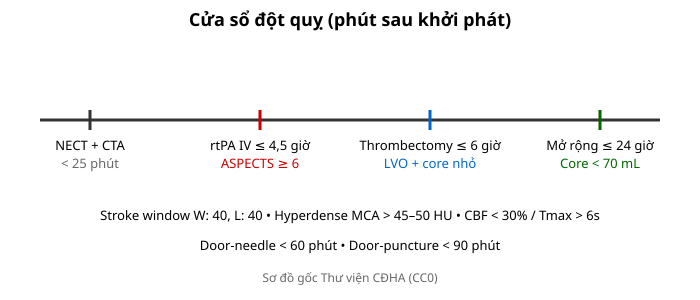
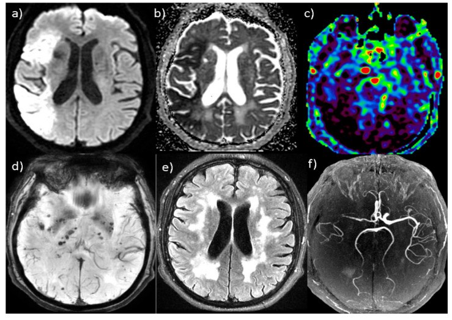
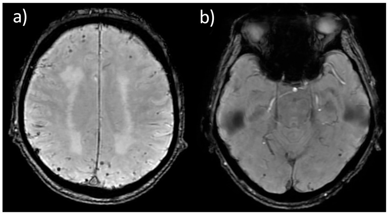

201 — Protocol CT/MRI sọ não: cửa sổ đột quỵ, DWI & tưới máu / Stroke protocol
Tags: pattern:protocol-so-nao vung:so-nao score:ASPECTS protocol:CT-MRI-so-nao
Mức chắc chắn (certainty): tổng hợp y văn (literature synthesis) — nhóm tự biên từ y văn mở, chưa gắn ca nguyên văn đơn lẻ.
1. Tổng quan — mỗi phút 1,9 triệu neuron chết + cửa sổ quyết định mọi chỉ định
- Đột quỵ thiếu máu: mỗi phút tắc mạch lớn mất ~1,9 triệu neuron — TẠI SAO protocol ép thời gian (cửa-chụp < 25 phút, cửa-kim < 60 phút, cửa-chọc mạch < 90 phút): chụp càng nhanh, cứu càng nhiều vùng tranh tối tranh sáng (penumbra).
- CT không tiêm (NECT) thấy máu 50–90 HU nhưng nhồi máu sớm chỉ giảm ~2–3 HU/giờ — TẠI SAO bắt buộc chỉnh cửa sổ đột quỵ (Stroke window: W: 40, L: 40 hoặc W: 8, L: 32): cửa sổ bụng/thông thường nuốt chửng chênh lệch nhỏ của nhân bèo/thùy đảo.

Sơ đồ gốc Thư viện CĐHA, CC0.
Một ca "đa phương thức" minh họa cả gói protocol: (a) DWI tăng tín hiệu + (b) ADC giảm (hạn chế khuếch tán) vùng ĐM não giữa phải — nhồi máu cấp; (c) bản đồ tưới máu; (d) SWI; (e) FLAIR; (f) MRA. Nguồn: Aracki-Trenkic A et al., J Clin Med 2026 (PMC12986106), CC BY 4.0.2. Gamut chỉ định theo chuỗi xung (Gamut)
- NECT + CTA đầu-cổ: mọi đột quỵ cấp + chấn thương — loại trừ máu + tìm tắc nhánh lớn (LVO) + ASPECTS.
- Tưới máu CT/MR (Perfusion): cửa sổ 6–24 giờ không rõ giờ khởi phát — core/penumbra chọn lọc lấy huyết khối.
- DWI/ADC + FLAIR + SWI: DWI+/FLAIR− = < 4,5 giờ; SWI tìm huyết khối tĩnh mạch + vi xuất huyết amyloid.
- MRA/MRV: phình/AVM + huyết khối xoang tĩnh mạch (CVST) khi đau đầu + phù gai.

*Chuỗi SWI/SWAN — "mất tín hiệu tròn nhỏ" (a) hơn mười vi xuất huyết hai bên dưới vỏ và (b) vi xuất huyết dạng thùy; TẠI SAO SWI nhạy nhất: sản phẩm máu (hemosiderin) gây mất tín hiệu + "blooming"; cạm bẫy là vôi hóa cũng mất tín hiệu (phân biệt bằng pha/CT). Nguồn: Aracki-Trenkic A et al., J Clin Med 2026 (PMC12986106), CC BY 4.0.*3. Bảng chuỗi xung-chỉ định
| Chuỗi xung (sequence) | Tìm gì | Chốt vào (rule-in) | Chốt loại (rule-out) | Ngưỡng |
|---|---|---|---|---|
| NECT cửa sổ đột quỵ | Máu + dấu sớm MCA | Hyperdense MCA > 45–50 HU + mất ranh giới nhân bèo/đảo | Không máu + ASPECTS 10 → chuyển CTA | W: 40, L: 40; < 25 phút |
| CTA đầu-cổ | Tắc nhánh lớn (LVO) | Cắt cụt ICA/M1/basilar | Không LVO → xét rtPA | ≤ 4,5 giờ rtPA |
| Perfusion (CBF/Tmax) | Core vs penumbra | Core CBF < 30% < 70 mL + Tmax > 6s + mismatch ≥ 1,8 (≥ 15 mL) | Core ≥ 70 mL → lõi rộng | Tới 24 giờ (DAWN/DEFUSE-3) |
| DWI/ADC + FLAIR | Tuổi nhồi máu | DWI+/ADC− < 10 ngày; DWI+/FLAIR− = < 4,5 giờ | ADC sáng = shine-through | ADC < 620; giả bình thường 10–14 ngày |
4. Protocol chuẩn + flowchart
- Chuẩn đột quỵ: NECT (stroke window) → CTA → perfusion (khi 6–24 giờ/không rõ giờ) → MRI DWI khi cần tuổi tổn thương.
- Chấn thương: NECT lát mỏng + cửa sổ xương; SAH: CTA tìm phình + Modified Fisher.
flowchart TD
A[Nghi đột quỵ] --> B{NECT: máu?}
B -->|Có| C[Bài 212 xuất huyết]
B -->|Không| D{CTA có LVO?}
D -->|Có + core nhỏ| E[Thrombectomy ≤24h]
D -->|Không + ≤4.5h| F[rtPA IV]
5. Cạm bẫy
- Quên chỉnh stroke window = bỏ sót nhồi máu sớm (chỉ giảm 2–3 HU/giờ).
- Tương phản thận/suy thận trì hoãn CTA — cân nguy cơ/lợi ích, đừng bỏ CTA khi LVO.
- Chuyển động bệnh nhân kích động giả dày thành/nhòe — an thần nhẹ + lát mỏng.
6. Tự lượng giá — Blind Quiz
Ca 1 — Liệt nửa người 2 giờ, nhìn gói ảnh: (a) DWI, (b) ADC — đọc gì?
- Câu hỏi: chuỗi DWI/ADC nói gì? So với FLAIR? Có hạn chế khuếch tán thật không, hay "shine-through"?
Bấm để hiện đáp án
- DWI (a) TĂNG tín hiệu + ADC (b) GIẢM ở vùng ĐM não giữa phải = hạn chế khuếch tán thật (nhồi máu cấp). Nếu ADC không giảm mà DWI sáng → "shine-through" T2 (giả), không phải nhồi máu mới.
- Nguồn ảnh: Aracki-Trenkic A et al., J Clin Med 2026 (PMC12986106), CC BY 4.0.
Ca 2 — Không rõ giờ khởi phát, DWI+/FLAIR−: còn rtPA được không? Vì sao? (Bảng mục 3.)
Bấm để hiện đáp án
- Được (wake-up stroke): DWI+/FLAIR− ≈ < 4,5 giờ — chỉ điểm tiêu sợi huyết khi giờ khởi phát không rõ.
Ca 3 — Tắc M1 giờ 16, core 40 mL + mismatch 2,2: thrombectomy hay nội khoa? (Bảng mục 3.)
Bấm để hiện đáp án
- Thrombectomy: core < 70 mL + mismatch ≥ 1,8 (≥ 15 mL) trong cửa sổ 24 giờ DAWN/DEFUSE-3.
Ca 4 — Ảnh SWI (a): vô số điểm mất tín hiệu tròn nhỏ dưới vỏ. Là gì, và phân biệt với cái gì?
- Câu hỏi: dấu hiệu trên SWI? Chẩn đoán? Cạm bẫy hình ảnh giống?
Bấm để hiện đáp án
- Vi xuất huyết não (cerebral microbleeds — CMB): điểm mất tín hiệu tròn nhỏ < 10 mm trên SWI/SWAN, thường dưới vỏ/thùy (bệnh mạch máu nhỏ, amyloid). Cạm bẫy: vôi hóa và huyết khối tĩnh mạch cũng mất tín hiệu — phân biệt bằng ảnh pha/CT và phân bố.
- Nguồn ảnh: Aracki-Trenkic A et al., J Clin Med 2026 (PMC12986106), CC BY 4.0.
Bài liên quan chéo
- 200 – Tổng quan Thần kinh
- 211 – Đột quỵ não (DWI/ASPECTS)
- 210 – Giải phẫu sọ não (vùng mạch)
- 224 – Chấn thương sọ não ở trẻ (protocol chấn thương, SWI cho DAI)
Không dùng để chẩn đoán độc lập khi chưa có người hướng dẫn.